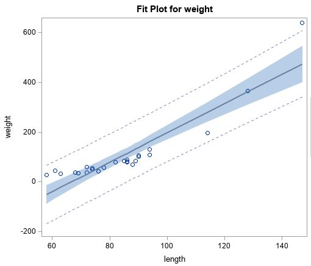
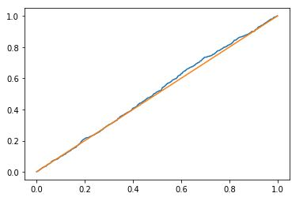

Predicting survival times of cancer patients with high-dimensional data is challenging because regression models do not work well
when the number of features is higher than the number of samples. In this project we used different types of autoencoders to reduce dimensionality of gene-expression data and predict survival times with the reduced features.
Satellite images showing street sign numbers are extracted from Google Street View. The goal is to build a classifier that can detect street sign numbers. I used an Artificial Neural Network and a Convolutional Neural Network to classify signs from 0 to 11. CNN outperformed ANN with fewer weights, though CNN took a longer training time than ANN.

I collected London bus incident dataset and highlighted insights such as what types of routes contribute to more incidents and trends over time.

Developed a regression model to predict alligator weight from its length using aerial photographs and visual sightings. Compared simple linear regression with a transformed model and selected the best fit.

Generated pseudo-random numbers and used the Kolmogorov-Smirnov test to check if they follow a uniform distribution.

Implemented the EM algorithm to estimate parameters of a Gaussian mixture model and evaluate its performance.

Used bootstrap methods to estimate statistics from haircut cost data. Built 90% confidence intervals with percentile and double bootstrapping techniques and compared the results.

Performed Kaplan–Meier survival analysis and Cox proportional hazards regression on publicly available data to examine the effects of covariates on time-to-event outcomes.

Built a Python-based web app to visualize motor vehicle collision data in New York.
Designed an interactive Tableau dashboard showing customer balances by age, region, and race.